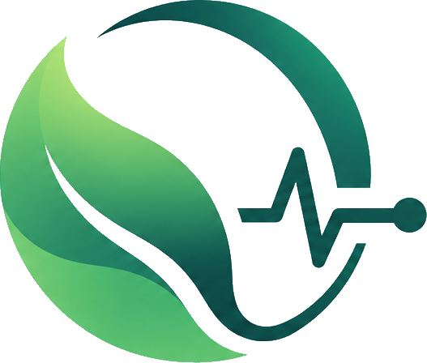

ECOPULSE
Environmental monitoring · project portal
Project EcoPulse
Environmental data,
made visible.
A connected air-quality monitoring project combining low-cost sensing, environmental data, and a live simulated dashboard.
Dashboard
Project & media
Bibliography
1
WHO, Air Quality Monitoring for Enhanced Understanding of Health Impacts and Beyond (2026).
Source ↗
2
WHO, Health Effects of Air Pollution: Evidence and Implications (2026).
Source ↗
3
WHO, Ambient Air Pollution: A Global Assessment of Exposure and Burden of Disease (2016).
Source ↗
4
Idrees, Z. and Zheng, L., Low Cost Air Pollution Monitoring Systems: A Review of Protocols and Enabling Technologies, Journal of Industrial Information Integration, Volume 17, 2020, Article 100123.
5
Performance Evaluation of Low-Cost Air Quality Sensors: A Review, Science of the Total Environment, Volume 818, 2022, Article 151769.
6
Zimmerman, N., Tutorial: Guidelines for Implementing Low-Cost Sensor Networks for Aerosol Monitoring, Journal of Aerosol Science, Volume 159, 2022, Article 105872.
7
Sensirion, SCD4x CO₂ Sensor Documentation and Datasheet.
PDF ↗
8
Sensirion, SHT3x-DIS Digital Humidity and Temperature Sensor Datasheet.
PDF ↗
9
Bosch Sensortec, BMP390 Digital Pressure Sensor Datasheet.
PDF ↗
10
Plantower, PMS5003 Digital Universal Particle Concentration Sensor Documentation.
PDF ↗
11
Espressif Systems, ESP32 Series Datasheet.
PDF ↗